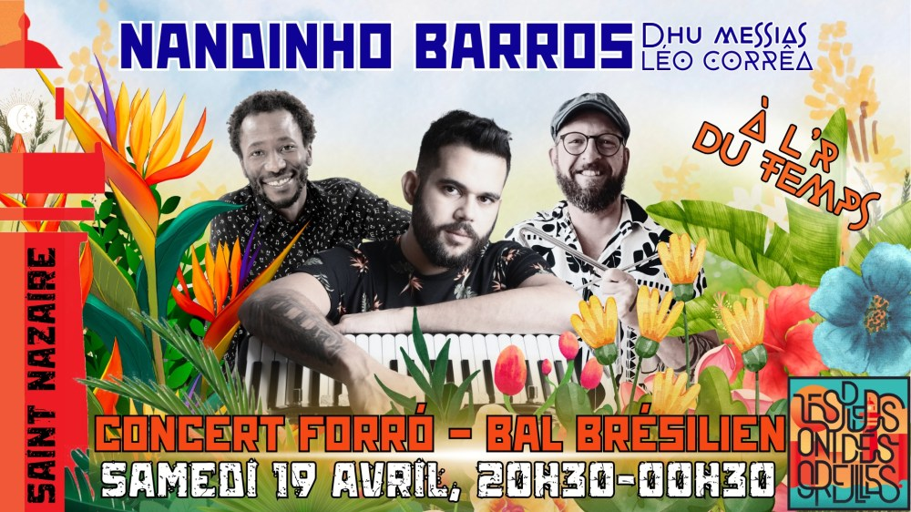

Concert Nandinho Barros à Saint-Nazaire

Nous aurons l’immense joie d’accuellir le fantastique musicien de Rio de Janeiro, 🪗NANDINHO BARROS 🪗, accordéoniste, chanteur et compositeur, du célèbre groupe Contêrraenos, que nous aimons tant.
https://www.instagram.com/nandinhobarros/
https://www.instagram.com/reel/DHJa70ep0mw/
Au cours de sa carrière, il a partagé la scène avec les plus grands noms du forró (Gareldo Azevedo, Fagner, Mestre Zinho, Dominguinhos, Elba Ramalho et j’en passe…).
Depuis l’enfance, il promène son accordéon de scène en scène, de bal en bal, de studio en studio au Brésil comme en Europe, et participe à la création et l’enrichissement de cette musique incroyable qu’est le forró.
Ce sera une superbe occasion pour nous de l’écouter, le voir jouer, de danser, dans notre bistrot préféré, l’R du Temps, le bar à l’immense bibliothèque.
Il sera accompagné, pour cette soirée mémorable, de deux pointures
.
👉 Au zabumba et au choeur, de 🥁 DHU MESSIAS 🥁, brésilien lillois, talentueux percussionniste du Nordeste, que l’on peut rencontrer sur toutes les bonnes scènes européennes et pour la première fois chez nous.
👉 Au triangle et au choeur, ce sera de notre brésilien nazairien préféré que nous ne présentons plus, 🎻 LEO CORREA 🎻, au swing communicatif et à la voix de velours.
Bref, bref, bref, NOUS SERONS EN TRES TRES BONNE COMPAGNIE 😀 🎉
💃 Le samedi après-midi 🕺
MARION LIMA, THE PROF, mondialement reconnue et pédagogue hors-pair, donnera des stages de forró de 14h à 19h. On vous en dit plus bientôt.
— PROGRAMME —–
⭐ STAGES DE DANSE: 14h-19h
🚀 DEBUT DE SOIREE: 20h30
Initiation au forró: 20h45
Concert: 21h30
FIN: 1h
💥 BILLETTERIE – PAF 12€ – JAUGE LIMITÉE à 70 billets (pour le confort de la danse). Réservation fortement conseillée !
https://www.helloasso.com/associations/les-pieds-ont-des-oreilles/evenements/concert-nandinho-barros
🚗 COVOIT: c’est ici !
https://docs.google.com/spreadsheets/d/18pup31706aoBu_PXvhgpxJNuN4yYGhuRcLZrT8erUIk/edit?usp=sharing
🌮 RESTAURATION
Planches et fingerfood sur place, miam 🤤
🛋️ COUCHSURFING
Contactez-nous !
🙏 HELP
Nous cherchons un PHOTOGRAPHE bénévole pour capter l’émotion du moment 📸 .
Il aura sa place offerte pour le concert, youpi !
☎️ CONTACT
07 63 47 55 85 / 06 60 40 15 17
lespiedsontdesoreilles@gmail.com
Até logo!